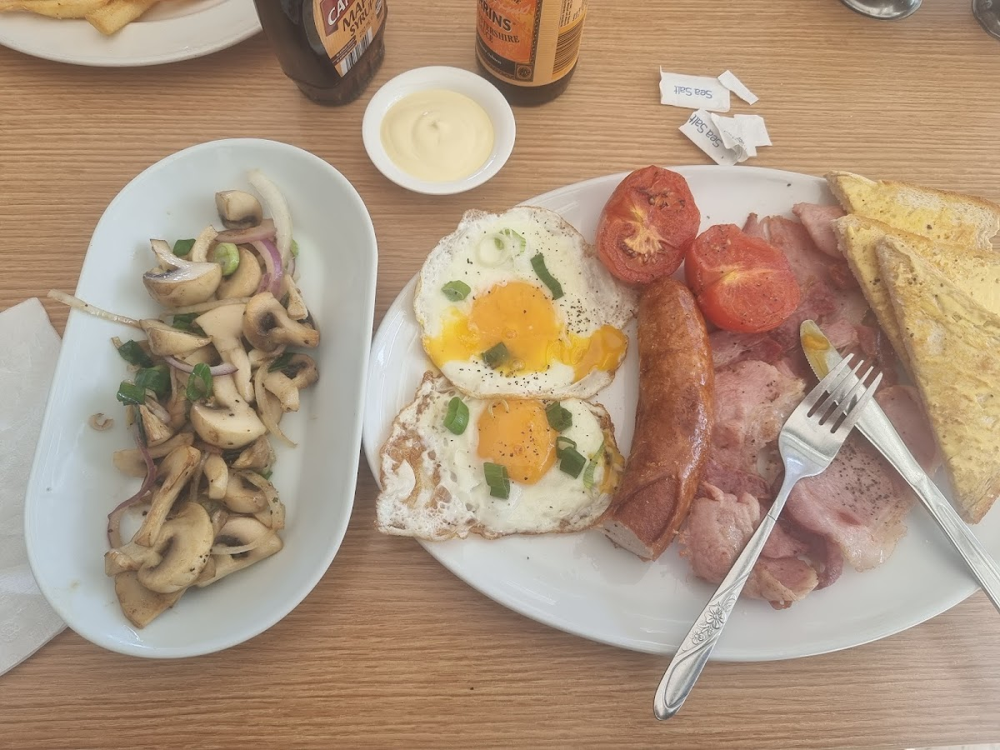
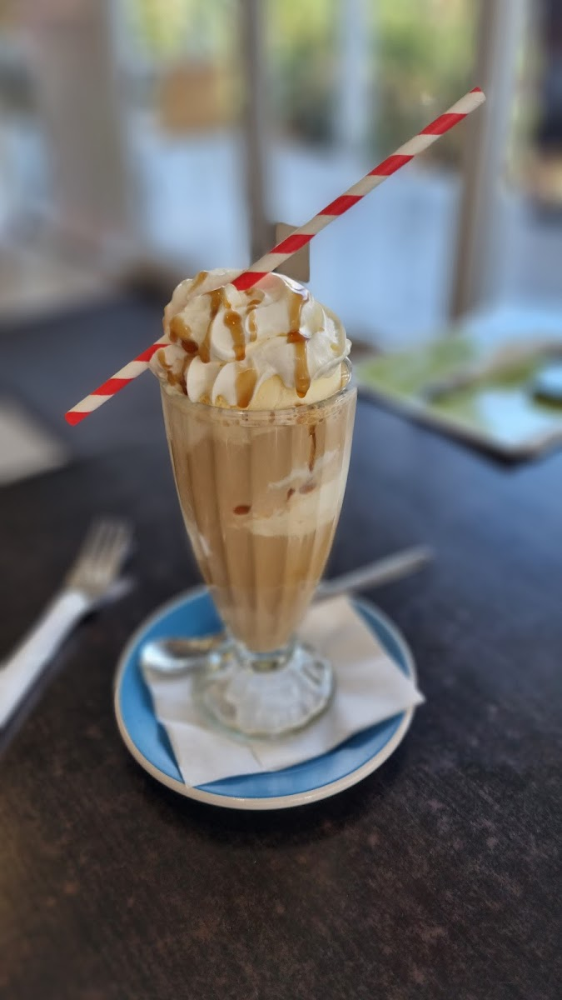
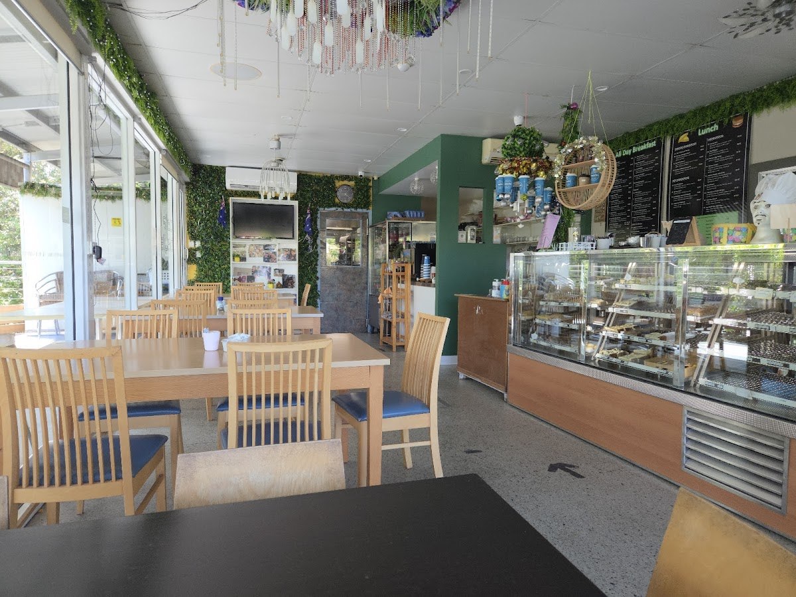

23 May 2026
Facebook page snapshot
264 likes, 2 talking about this and 23 were here. "Cafe At Bayliss is a local treasure."


A relaxed neighbourhood spot for all-day breakfast, pancakes, omelettes, burgers, sandwiches, milkshakes and strong coffee at Bayliss Road.
Live Facebook timeline plus public page snapshot and manual fallback slots.
264 likes, 2 talking about this and 23 were here. "Cafe At Bayliss is a local treasure."
About
Cafe at Bayliss is a Heritage Park neighbourhood cafe known for friendly service, relaxed dine-in meals, takeaway, outdoor seating and hearty breakfast and lunch classics.
Public listings and visitor reviews call out breakfast sandwiches, chicken pies, scrambled eggs, pancakes, milkshakes, iced coffee, tea, burgers and pork belly rice plates.

Photos from the provided Bayliss image set.
Find Cafe at Bayliss at Shop 9 on Bayliss Road in Heritage Park, with takeaway, dine-in seating and easy local parking.